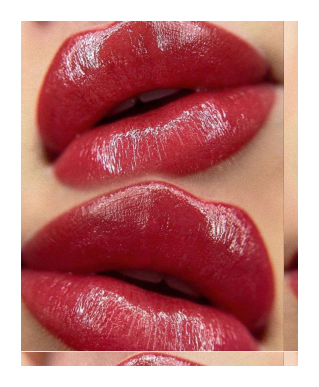

Перманентный макияж – не татуировка на всю жизнь. Настоящий перманент с использованием профессиональных пигментов сохраняется от года до 3-х лет и его можно корректировать. Перманентный макияж – это безопасно и безболезненно. Он не оставляет рубцов и шрамов. Настоящий перманентный макияж – выглядит натурально и эстетично, в отличие от непрофессионального перманента и подкрашенных карандашом бровей.
Каждая женщина мечтает быть всегда красивой и ухоженной. Однако далеко не всегда это удается: косметика быстро стирается, требует постоянной коррекции. Особенно это касается губной помады и карандаша. Решить данную проблему легко, если сделать перманентный макияж губ.
Процедура имеет ряд преимуществ. Основное – это привлекательный вид губ в любое время и в любом месте, будь это пляж, бассейн или сауна. Не нужно их подкрашивать, подводить контур. Кроме того, перманентный макияж позволяет изменить форму губ, придать им объем при необходимости (за счет прорисовки контура чуть выше естественного либо за счет использования нескольких оттенков), восстанавливает молодость и насыщенность цвета, позволяет скрыть различные дефекты губ.
При перманентном макияже (татуаже) пигмент вводится в кожу на небольшую глубину, со временем пигмент исчезает. При правильном уходе ПМ губ держится до 3 лет. Однако срок жизни перманентного макияжа зависит от качества пигмента, особенностей кожи и воздействия внешних факторов.
Существует несколько техник нанесения перманентного макияжа. Выбор зависит от желаемого результата. Для придания четкости контуру губ используется техника «контур с растушевкой». При этом используется пигмент, который соответствует тону губ и цвету кожи. При нанесении пигмента возможно визуальное увеличение губ.Техника «натюрель» подразумевает использование пигмента для прорисовки контура губ и растушевки естественных тонов.Также существует техника 3D, которая в действительности аналогична контуру с растушевкой. Но при этом могут использоваться пигменты различных цветов.Цвет пигмента после заживления становится бледнее (50% цвета уходит), поэтому следует выбирать более яркие оттенки.
Процедура практически не требует подготовки. За две недели до и после перманентного макияжа нельзя пить антибиотики. За 1-2 дня до процедуры не стоит посещать солярий. За несколько часов до процедуры не рекомендуется употреблять напитки, содержащие кофеин. Кроме того, специалисты рекомендуют пропить препараты «Гевиран» или «Валацикловир», которые предотвращают появление герпеса. Прием следует начинать в день процедуры. Всего препарат необходимо принимать по аннотации.
После сеанса губы могут отекать, пигмент приобретает яркий оттенок. Через два-три дня цвет немного бледнеет, появляется защитная корочка. В это время ткани восстанавливаются, происходит равномерное распределение пигмента. Корочку нельзя трогать и размачивать. Примерно через неделю губы становятся почти бесцветными, на них образуется вторичная пленка. Она сохраняется в течение 1-2 недель. И только после этого будет виден окончательный результат, который будет радовать Вас как минимум один-два года.В первые несколько дней необходимо пропить препараты от герпеса. В течение первой недели нельзя интенсивно заниматься спортом, пользоваться декоративной косметикой. С первого дня губы можно увлажнять вазелином (косметическим или детским без добавок).В течение первых трех недель нельзя интенсивно загорать на солнце и в солярии. В дальнейшем губы необходимо защищать от ультрафиолетовых лучей с помощью специальных средств, так как кожа после загара интенсивно обновляется, и пигмент «уходит» вместе с ороговевшими частицами кожи. Первый месяц нельзя посещать бани и сауны.
Инфекционные заболевания в острой стадии
Плохая свертываемость крови
Эпилепсия и расстройства нервной системы
Сахарный диабет
Онкологические заболевания
Астма
Печеночная и почечная недостаточность
СПИД, ВИЧ, гепатит
Аллергическая реакция на пигменты
Беременность